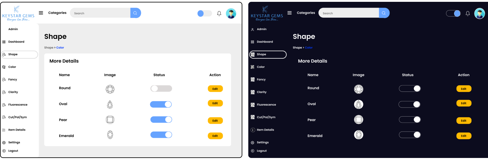

Brief
During my 6-month internship at Techbiz Innovators, an Australian IT startup, I actively contributed to the development of the Keystar Gemstone Admin Panel. This web-based application was designed to streamline gemstone inventory management for Keystar, a renowned gemstone supplier.
As a Software Engineer and UI/UX Designer, I conducted research, designed the UI, created prototypes,
and implemented frontend development to ensure an intuitive and efficient user experience for the internal team at Keystar. Techbiz Innovators focuses on user-centric design and innovative solutions for businesses, emphasizing the importance of cutting-edge technologies. My contributions aimed to enhance usability and operational efficiency for the Keystar team.
Problems
- Complex Data Management: The system had to handle a vast amount of gemstone data, including details such as type, carat weight, cut, clarity, color, and origin. Organizing and managing this data effectively was crucial to ensure accurate inventory tracking.
- User-Friendly Interface: The Admin Panel needed to provide a user-friendly interface that allowed Keystar's internal team to easily add, edit, and search for gemstones. Intuitive navigation and clear functionalities were essential to ensure a seamless user experience.
- Security and Access Control: As the Admin Panel contained sensitive information, robust security measures and access control had to be implemented to protect the data from unauthorized access or manipulation.
Goals
- Streamlined Data Entry: The Admin Panel featured a simplified and structured data entry system. This enabled the Keystar team to enter gemstone details efficiently, ensuring accuracy and reducing the likelihood of errors.
- Advanced Search and Filtering: A robust search and filtering functionality allowed users to quickly locate specific gemstones based on various criteria. This enhanced productivity and reduced the time spent on manual searching.
- Role-Based Access Control: The Admin Panel implemented a role-based access control system, granting different levels of permissions to users based on their roles within the company. This ensured that sensitive data was only accessible to authorized personnel.
User Research
To gain insights into the target users' preferences, needs, and pain points, user research activities were conducted. This involved interviews, surveys, and usability testing with individuals who would be using the admin panel on a regular basis. The research aimed to identify user workflows, pain points, and opportunities for improvement.
Competitive Analysis
In order to understand the competitive landscape and identify opportunities for differentiation, a comprehensive competitive analysis was conducted for the Keystar Gemstone Admin Panel. The analysis focused on identifying key competitors in the gemstone inventory management software market and evaluating their strengths and weaknesses.
Ideation
Based on the user research and competitive analysis conducted for the Keystar Gemstone Admin Panel, here are proposed features:
- User Experience: Focus on providing a highly intuitive and user-friendly interface to minimize the learning curve and enhance ease of use.
- Real-time Updates: Offer real-time inventory updates and notifications to enable accurate stock management and efficient order fulfillment.
- Customization: Provide flexible customization options to cater to the specific needs of gemstone inventory management at Keystar.
- Integration Capabilities: Ensure seamless integration with CRM systems, e-commerce platforms, and other business systems to streamline data synchronization and enhance operational efficiency.
- Reporting and Analytics: Incorporate advanced reporting and analytics features to provide valuable insights into gemstone inventory performance and trends.
After the ideation phase, the team and clients approved the proposed features. However, due to limited time, the focus shifted to creating the sitemap, user flow, wireframe, and UI design process. As I was responsible for both design and development, this approach allowed for a streamlined workflow. The objective was to deliver a well-structured website that met the project requirements within the given timeframe. This decision optimized time management and ensured steady progress towards achieving the final product.
Sitemap
The sitemap provides a hierarchical structure of the different sections and features within the Keystar Gemstone Admin Panel. It serves as a visual representation of the information architecture and helps stakeholders understand the overall organization and flow of the application.
User Flow
This user flow outlines the steps a user would take to add a new gemstone shape to the inventory within the Keystar Gemstone Admin Panel. It provides a sequential representation of the user's actions and the corresponding system responses, ensuring a clear understanding of the process.
Wireframes
I have created wireframes for the Keystar Gems application. These wireframes serve as a visual representation of the interface structure and functionality. They outline the placement of key elements such as navigation menus, content sections, forms, buttons, and interactive components. The wireframes prioritize user flow, information hierarchy, and overall usability.
Frontend Development
The development team and I collectively decided to use the tech stack of HTML, CSS, and JavaScript for the frontend development of the Keystar Gems project. This choice was made based on the versatility, widespread adoption, and compatibility of these technologies with web standards. The combination of HTML for content structure, CSS for styling and layout, JavaScript for interactivity ensured an efficient and effective development process, resulting in a user-friendly and visually appealing application.
Dark/Light Mode Feature
The dark-light mode feature added to the Keystar Gems application enhances the user experience by providing a visually appealing and comfortable viewing option. It improves accessibility and allows users to personalize their experience based on their preferences.

UI Screens
The UI screens for Keystar Gems showcase the final visual design, incorporating colors, typography, and imagery for a user-friendly experience. They cover different aspects of the application and ensure consistency and clarity. These screens bridge the gap between wireframes and implementation, aligning stakeholders and design teams.
Prototype
Visit Website
Impact
As a Software Engineer and UI/UX Designer Intern, my contributions to the Keystar Gems project have been well received by my development team, design team and stakeholders. The client has expressed satisfaction with the intuitive and visually appealing interface I have created for the gemstone inventory management application. The positive feedback from these key parties reflects the successful outcome of my work and the value it brings to the project.
Reflection:
My involvement in the Keystar Gems project as a Software Engineer and UI/UX Designer has provided valuable learning experiences. I gained insights into the importance of user research, effective collaboration with design and development teams, and attention to detail in frontend development. These learnings will shape my future work, enabling me to create more impactful and user-centered solutions.